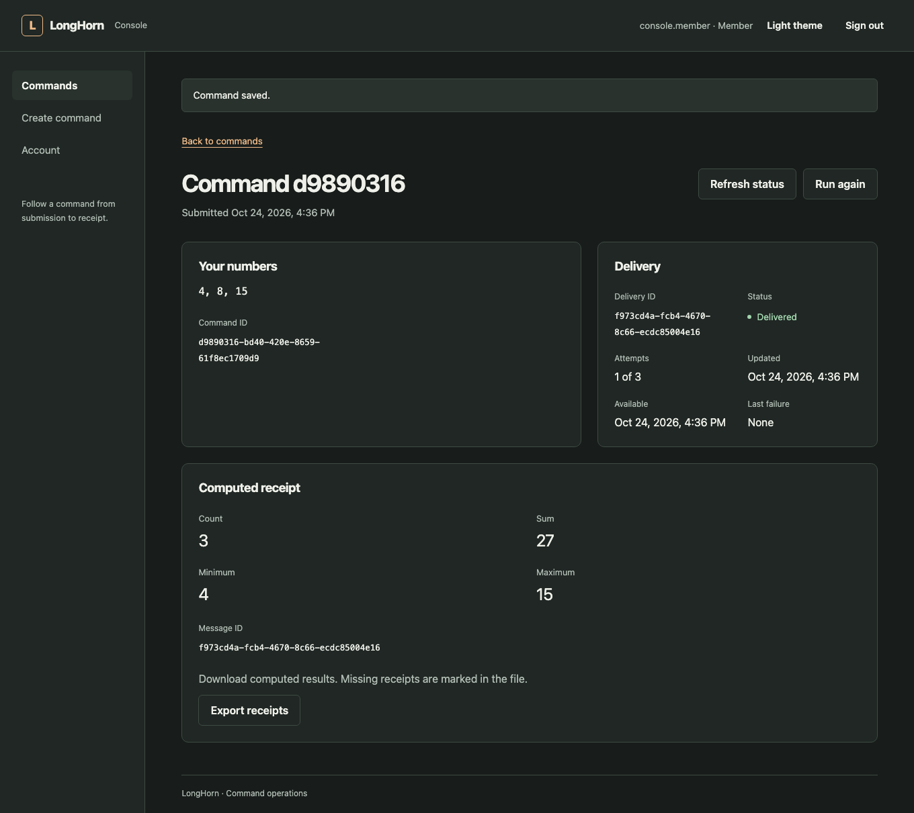

Write the backend once. Keep the work when the process dies.
LongHorn is a modular TypeScript framework on Hono and Web Standards. Your app runs on Node, Bun, Deno or Cloudflare Workers, and a saved command still reaches its result through crashes, outages and lost replies.
Pre-release. Nothing is on npm yet, so you run LongHorn from a checkout. Tested locally on macOS; see what is not claimed.
Break it yourself
Follow one command, the numbers 4, 8 and 15, from request to receipt. Then pick something to go wrong.
- ClientWaiting
- TransactionWaiting
- DispatcherWaiting
- ReceiverWaiting
- Commands saved
- 0
- Send attempts
- 0
- Receipts
- 0
Computed receipt
- Numbers
- 4, 8, 15
- Count
- 3
- Sum
- 27
- Minimum
- 4
- Maximum
- 15
This is an animation of tested behaviour, not a live server. Delivery is at-least-once with deduplication, not exactly-once across systems. To run the real one: pnpm demo:operator-accounts
Same app, your host
Routes, services and lifecycle are shared. Only the host changes, and each host uses its platform's own server, not a compatibility layer.
- Storage
- Passwords
- Keep in mind
Take only the parts you use
Core needs four small packages. Everything else is imported and wired by your application, so nothing starts behind your back.
- core
- The application: start, listen, drain, close
- container
- Typed tokens and application singletons
- http
- A real Hono app with error defaults
- runtime
- Fetch and listener contracts
- logger
- Structured logs, redaction, request IDs
- validation
- Standard Schema parsing and Hono input
- config
- Validated configuration records
- database
- SQL, transactions and migrations
- auth
- Passwords, sessions and guards
- events
- Awaited in-process notifications
- cache
- Memory or Redis, with shared loads
- queue
- Persistent jobs, leases and retries
- scheduler
- Durable one-time, interval and cron runs
- idempotency
- Safe retries with saved replies
- ratelimit
- Request budgets per subject
- outbox
- Transactional delivery, recovery and audit
- observability
- Health, metrics, traces and OTLP export
Create an app
Each project is independent. It gets its own copy of the framework and works outside this repository.
A finished app to read
The command console puts the modules to work: accounts, history, receipts, operator recovery and an audit log. Copy it, or read it to see how the parts connect.
pnpm install
pnpm demo:operator-accountsThen open http://127.0.0.1:3010/console. The demo starts its own temporary PostgreSQL and removes it on Ctrl+C.

What has been tested, and what has not
Run for real
- 749 source tests, and 66 gates that start real engines, processes and browsers
- Processes killed with SIGKILL during and after commits
- Real PostgreSQL 18, Redis, D1, Durable Objects and OpenTelemetry Collector
- Lost HTTP replies, concurrent writers and failed schema upgrades
- Generated projects, moved out of the repository and installed fresh
- Backup, restore into empty storage, then a new command
- Console screens with axe in Chromium, in both themes and at phone width
Not claimed
- Published packages: nothing is on npm
- A complete hosted CI pass: 7 of 8 jobs passed on the first full run
- Production or cloud deployment, failover or replication
- Exactly-once delivery across systems
- Password reset, account recovery or MFA
- Other browser engines, or VoiceOver and TalkBack on real devices
- Native PostgreSQL on anything other than Node